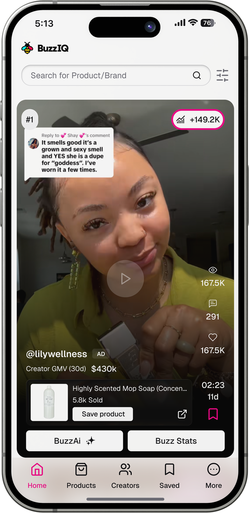
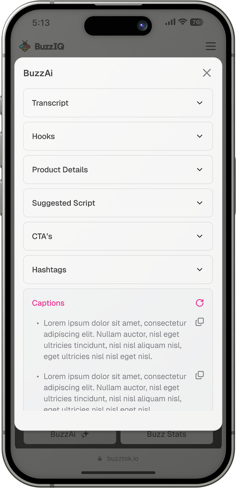
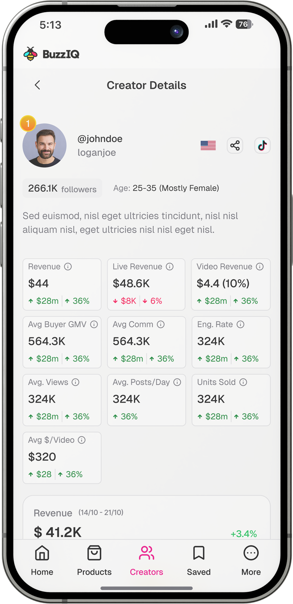

TikTok Shop intelligence platform built for a US-based creator commerce company. IGNITEAMZ, Sep 2025 – 2026.

Role
Sole Product Designer
Client
IGNITEAMZ
Timeline
Sep 2025 – 2026
Platforms
Mobile, tablet, web
Project contributors
Nelson KuriaOverview
TikTok Shop creators were guessing at what to sell and what to post. BuzzIQ replaced that guesswork with data on what was already selling and what content was already working.
IGNITEAMZ needed it built and shipped, with no design system in place and no other designer. My team at PackCommerce took it on, and they brought me in as sole designer off a quick look at past work, even though some of it was under NDA and I couldn't show them the full picture. The build had to cover mobile, tablet, and web from day one.
My contract ran its full agreed term and was then extended. I completed the designs and handed off with production underway, and the product shipped after my engagement ended. It has since been rebranded to BrandBeacon (brandbeacon.io) with a broader scope than what I designed, indexing TikTok more widely rather than focusing on TikTok Shop trending products and creators.
What it did
More than a trending list
Video discovery
The home feed surfaced the fastest-growing videos by view velocity rather than by raw view count, so creators could catch videos still climbing instead of ones that had already peaked. Trending products and trending creators were capped at the top 20 each; the rapidly-growing videos were not capped.
BuzzAI
A button under each video opened the BuzzAI popup with material generated for that specific video: a transcript, hooks, a suggested script, ready-to-use captions with a regenerate option, hashtag suggestions, CTAs, and product details. It had to deliver all of that without pulling the user out of the feed they were browsing.
Product intelligence
A detail view for each product covered pricing changes over time, units sold, remaining TikTok Shop inventory, the number of creators promoting it, the commission available to a creator, and revenue broken out separately across posted videos and live videos. It was the densest information design problem on the project, and it had to work responsively from web down to mobile.



My role
I owned the design end to end, from initial concepts through to a finished, responsive product.
550+
screens across mobile, tablet, and web
Made most design decisions independently first, working across a Kenya/US time zone gap, then brought them to directors and developers to review and align on before moving forward.
Brought in a design system I'd already built on my own and reshaped it to fit what BuzzIQ actually needed, since there was nothing in place to start from.
Started from shadcn, but customized enough of it with variants and assets that it stopped looking like shadcn.


The advantage
The advantage that made it work
IGNITEAMZ works directly with TikTok Shop creators, so we had a live feedback loop most projects don't get. We could run surveys and A/B tests with actual users, and creators told us directly what features mattered, what stood out, and what was missing. That fed straight back into the designs.
Challenges
Navigating challenges & quality control
Protecting system integrity
Stakeholders would throw in last-minute feature requests or random tweaks during calls. Depending on the context, I'd either build out the alternative to prove why it solved the underlying problem better than their original idea, take it offline to evaluate independently, or make the change live on the spot. Throughout it all, I kept a close eye on consistency, stepping in to push back or offer a cleaner path whenever a request threatened to break the design system.
Developer QA & implementation
My job didn't stop at Figma. I stayed involved through the whole build, catching the small stuff that drifts during development, corner radii that don't match, spacing that's slightly off, and working directly with engineers to get it back on spec.
User feedback
Surfacing hidden filters
IGNITEAMZ ran user testing and found people weren't noticing the filters at all. They sat behind a plain icon in the navbar, and some users had been browsing the whole platform without ever knowing filters existed. So I moved them straight onto the screen instead of hiding them behind a click, and added a quick-access onboarding icon to the navbar so anyone could go back and check what a button did.
Prototype
Handoff
Keeping pace with the build
Every screen got weighed against both sides, what the business needed and what users needed, before it was final.
Once designs were handed off, the dev team flagged anything hard to build so we could fix it before it slowed anyone down.
We had a working prototype before development started, which meant a lot of the guesswork and back-and-forth that usually eats into a build never happened.
That back and forth is what let a solo designer keep pace with a moving team.